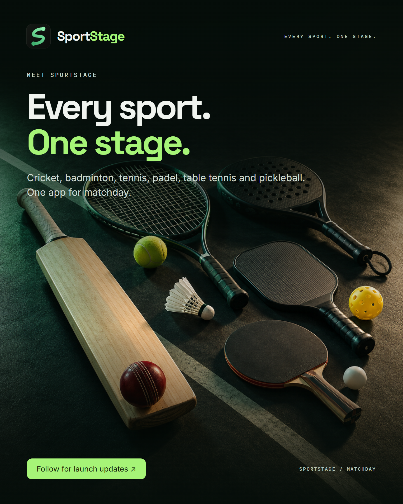
MEET SPORTSTAGE
Every sport. One stage.
Alt text
SportStage: Every sport. One stage. Cricket and racquet-sport equipment on a dark court.
India-first · English campaign kit · 12 concepts · 45 ready-to-post graphics · 4 short videos
Current CTA: Follow for launch updates. No public store availability is claimed. App screenshot uses demo players; score/sponsor cards are labelled illustrations.

Every sport. One stage.
SportStage: Every sport. One stage. Cricket and racquet-sport equipment on a dark court.
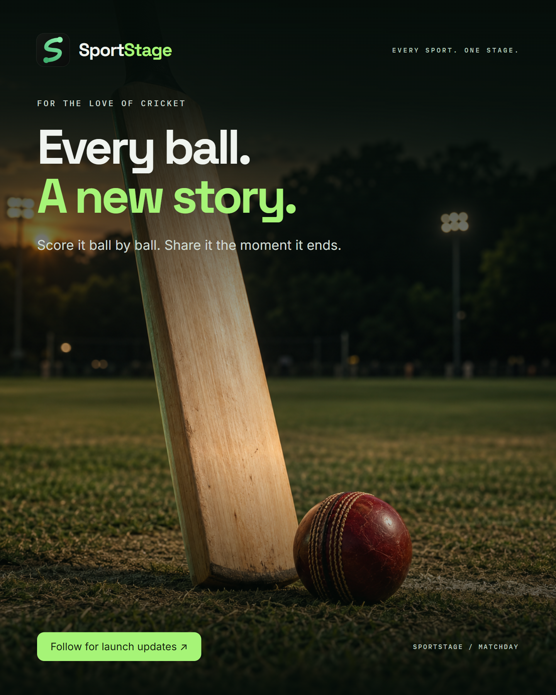
Every ball. A new story.
A cricket bat and red ball on an evening pitch. Every ball. A new story. Cricket scoring and match sharing on SportStage.
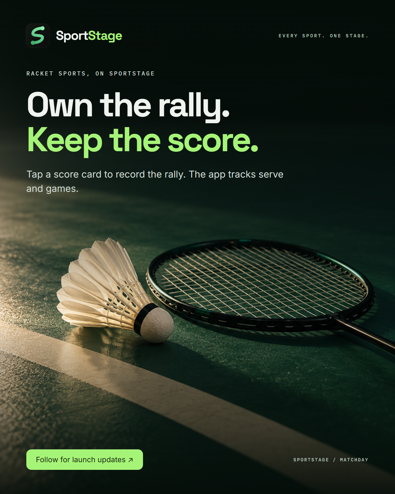
Own the rally. Keep the score.
A badminton shuttlecock and racket on a court. Own the rally. Keep the score.
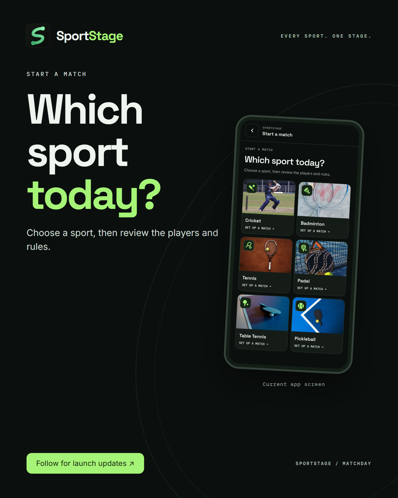
Which sport today?
The SportStage Start a match screen, asking Which sport today?, with photo tiles for six sports.
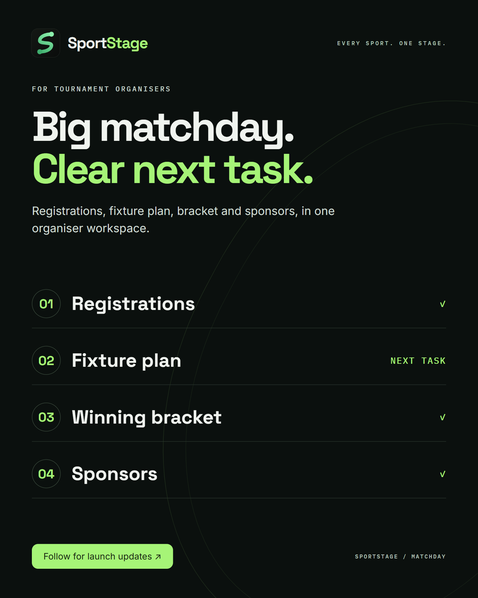
Big matchday. Clear next task.
SportStage organiser workspace: registrations, fixture plan, winning bracket and sponsors in one tournament workflow.
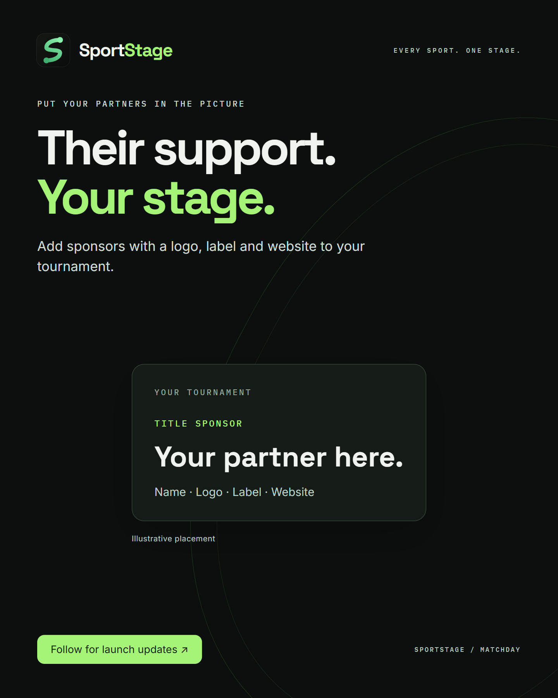
Their support. Your stage.
SportStage tournament sponsors: add a name, logo and sponsor label. An illustrative title-sponsor card is shown.
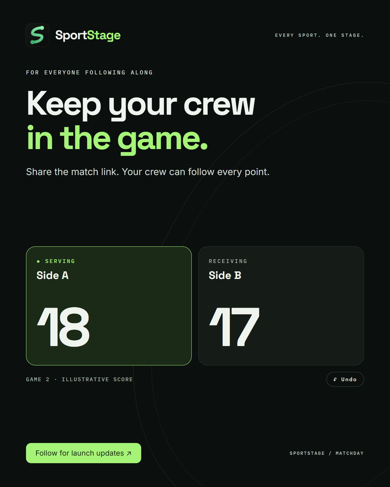
Keep your crew in the game.
Illustrative racket-sport score board: Side A serving at 18, Side B receiving at 17. Keep your crew in the game.
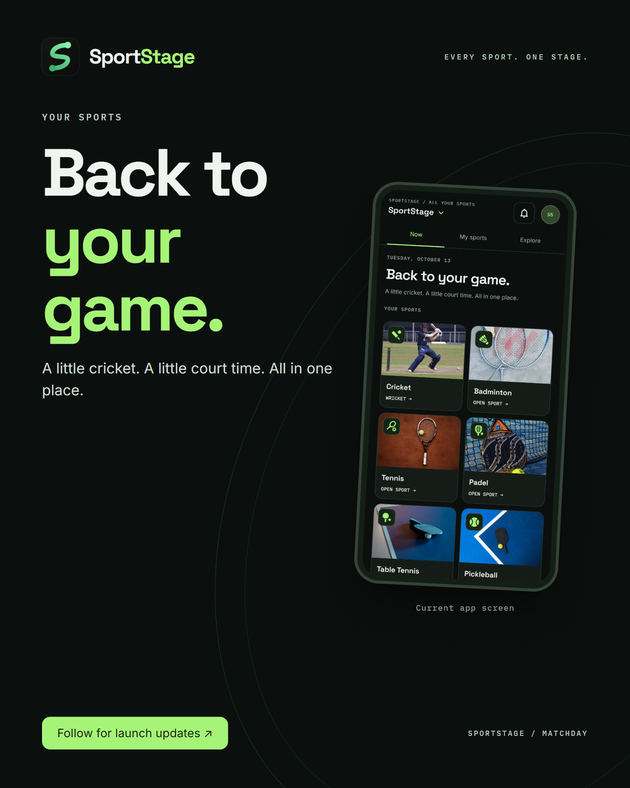
Back to your game.
The SportStage home screen, Back to your game, with photo tiles for cricket, badminton, tennis, padel, table tennis and pickleball.
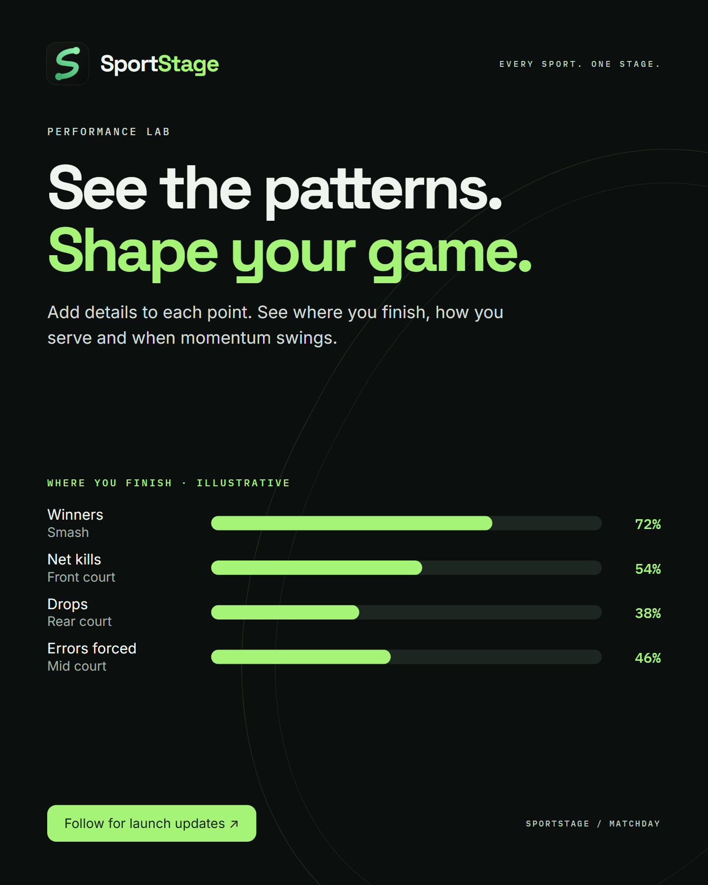
See the patterns. Shape your game.
An illustrative SportStage Performance Lab chart: where you finish, with bars for winners, net kills, drops and errors forced.
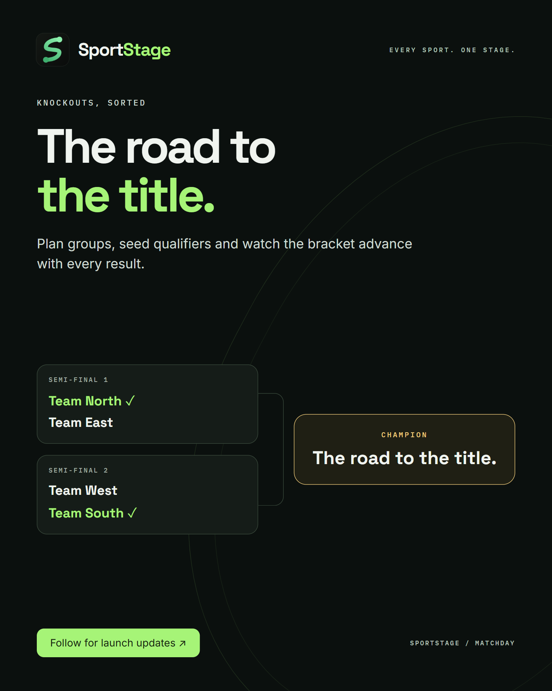
The road to the title.
An illustrative SportStage knockout bracket, with two semi-finals leading to a champion slot. The road to the title.
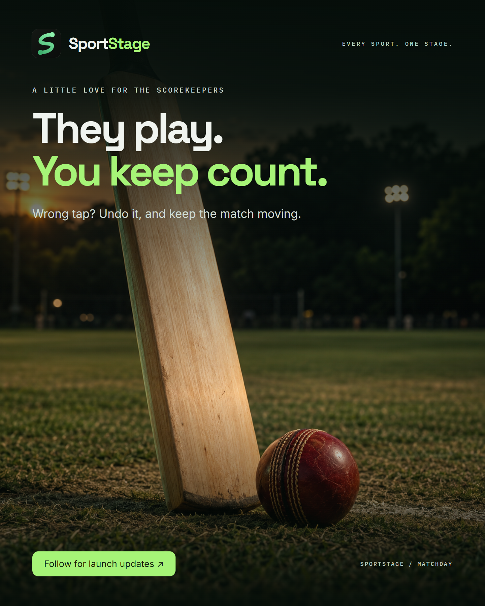
They play. You keep count.
A cricket bat and ball on a pitch. They play. You keep count. A SportStage post for scorekeepers.
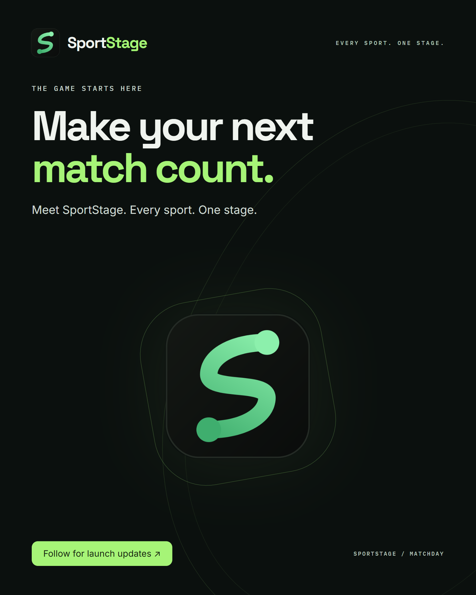
Make your next match count.
SportStage S logo with the headline Make your next match count.
Six slides, in order. Post together as a carousel.
Vertical MP4 · Original instrumental audio · Captions in-frame · Sidecar subtitles included
Editable artwork: campaign.json and HTML/CSS template. Full inventory: manifest.json. Artwork provenance and prompts: PROVENANCE.md.